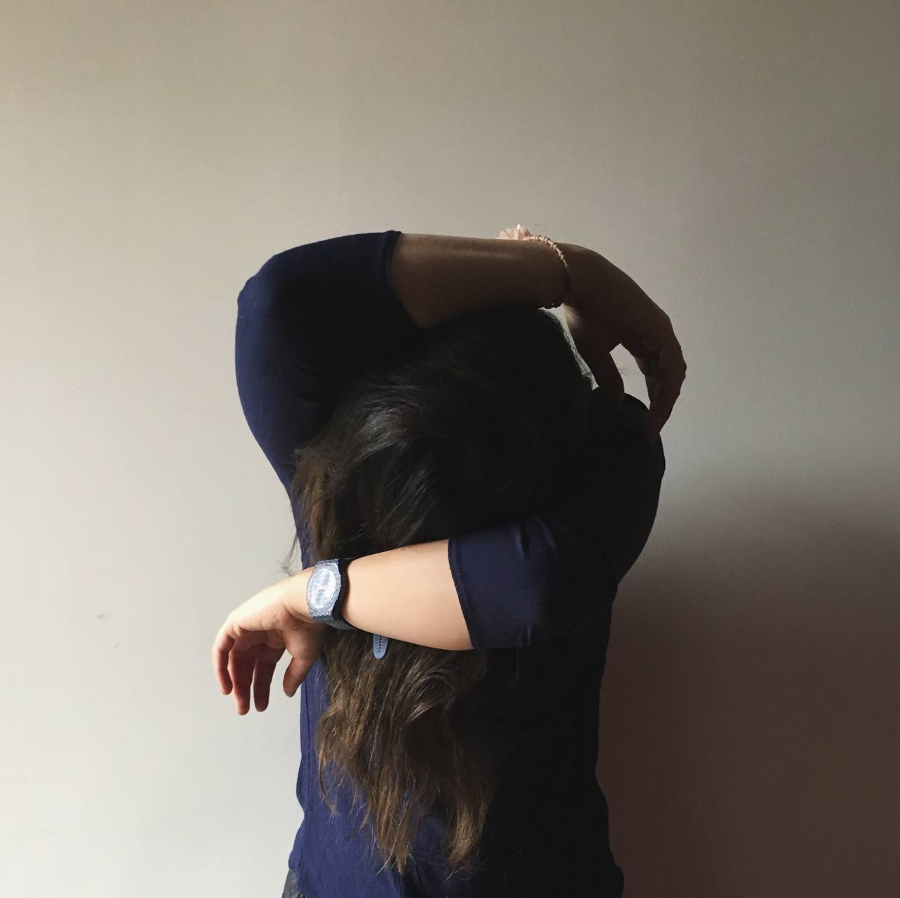

01
Bio
Education
- Bachelor of Arts in Music
- Fine Arts High School Diploma
02
Artist Statement
My practice emerges from the intersection of sound, image, the body, and memory. Working across performance, installation, photography, sound, and moving image, I explore how lived experience is embodied, remembered, fragmented, and transformed.
As a Middle Eastern artist, my practice is shaped by a cultural and social landscape in which tradition and modernity, collective memory and individual experience, belonging and displacement, often exist in tension. I do not approach this context as a fixed identity or a singular narrative; rather, it forms an underlying layer of my experience and informs the ways I understand the body, memory, language, space, and belonging. The complexities of growing up within and navigating between different cultural, social, and geographic contexts continue to influence the questions I bring into my work.
My relationship with music began in childhood and developed through years of intensive study and live performance. Alongside music, I pursued painting and visual practices, creating a parallel relationship with image and material. My experience with Iranian mirror work (Āineh-kāri) further shaped my understanding of reflection, repetition, fragmentation, and the transformation of space through material. These experiences continue to inform my approach to the body, surface, image, and presence.
I am interested in the body not only as a physical presence, but as a site where experience and memory are stored, carried, and reconstructed. Sound enters my work through rhythm, repetition, duration, silence, and physical presence, while photography, moving image, and installation allow me to examine what can be revealed, concealed, fragmented, or reconstructed. Performance becomes a space in which these elements can coexist and where an intimate experience can open into a broader reflection on contemporary life.
My work is concerned with the tensions between presence and absence, memory and forgetting, intimacy and distance, the personal and the collective. I am particularly interested in the gap between an experience itself and our ability to articulate, communicate, or represent it. This gap—between what is lived, what is remembered, and what can be expressed—often becomes the space from which my works emerge.
I do not begin with a predetermined medium. Instead, I allow each work to develop its own material and form in response to its conceptual and emotional structure. Through this process, sound can become image, the body can become material, memory can become space, and personal experience can be transformed into a visual and performative language.
03
Project
04
Contact
- Instagram @negin_zadeh_vakili